Sliceviewer#
Overview#
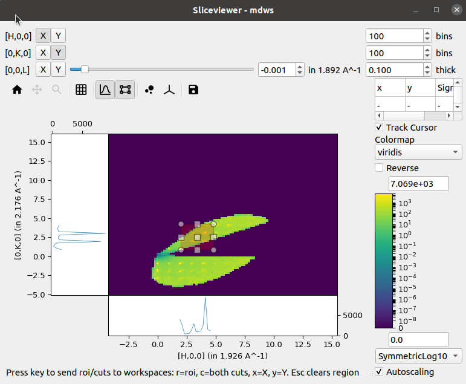
The Sliceviewer is a viewer supporting MDEventWorkspace, MDHistoWorkspace & MatrixWorkspace.
For multi-dimensional workspaces, you can view both MDWorkspaces and MDHistoWorkspaces, a 2D “slice” of the higher dimensional space
is shown, whereas a MarixWorkspace simply shows the 2 defined dimensions.
Some of the key features of the Sliceviewer provided are:
Overlay of peaks workspaces
Non-orthogonal axes view mode, including peaks workspace overlays
ROI preview and extraction
Non-axis aligned cutting tool
Cursor information widget that, for a MatrixWorkspace, includes quantities such as \(l1, l2, 2\theta\) etc
Arrow keys can now be used to move the cursor a pixel at a time when single-pixel line plots are enabled
The following sections illustrate some of these key features.
PeaksWorkspace Overlay#
The peaks overlay button allows selection of one or more PeaksWorkspaces to display on top of the main data image. This is only enabled for MD workspaces.
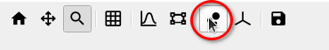
Peaks are displayed at the locations defined by each peak center with an ‘x’, while optionally displaying any peak shape if a given peak has been integrated.
{kind=link}
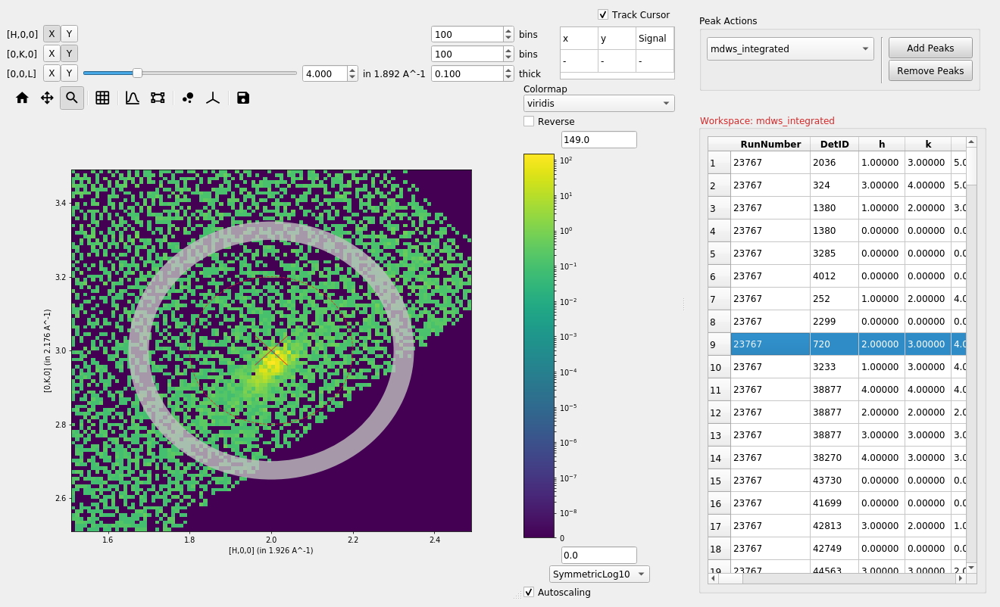
Adding or removing peaks#
Peaks can be added or removed from an overlayed peaks workspace by
selecting the desired peaks workspace from the drop down box (1) and
selecting either Add Peaks or Remove Peaks (2), then clicking
on the plot (3).
{kind=link}
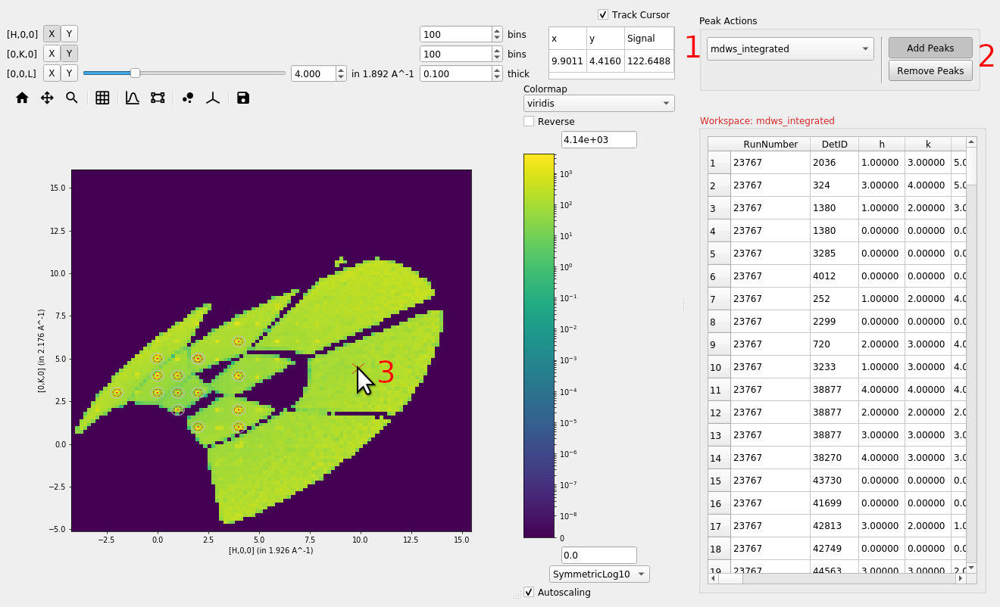
When adding peaks the position selected with the mouse click and the sliders are used, along with the MD Frame (Q_lab, Q_sample, HKL) to create and add a peak to the seleceted peaks workspace. If units are HKL then the peaks workspace requires an orientated lattice to be defined on it, one can be copied from the data workspace with CopySample or can be set with SetUB..
When removing peaks, the closest peak to the position selected will be removed from the peaks workspace, regardless of whether it is plotted or not.
Non-Orthogonal Axes View#
If the units of an MDWorkspace are HKL and the workspace has an attached UB matrix then the option to display the image using axes aligned with the crystal (so-called non-orthogonal view) will be now be visible:
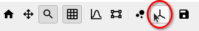
Activating this option transforms the axes taking into account the lattice angles encoded by the UB matrix:
{kind=link}
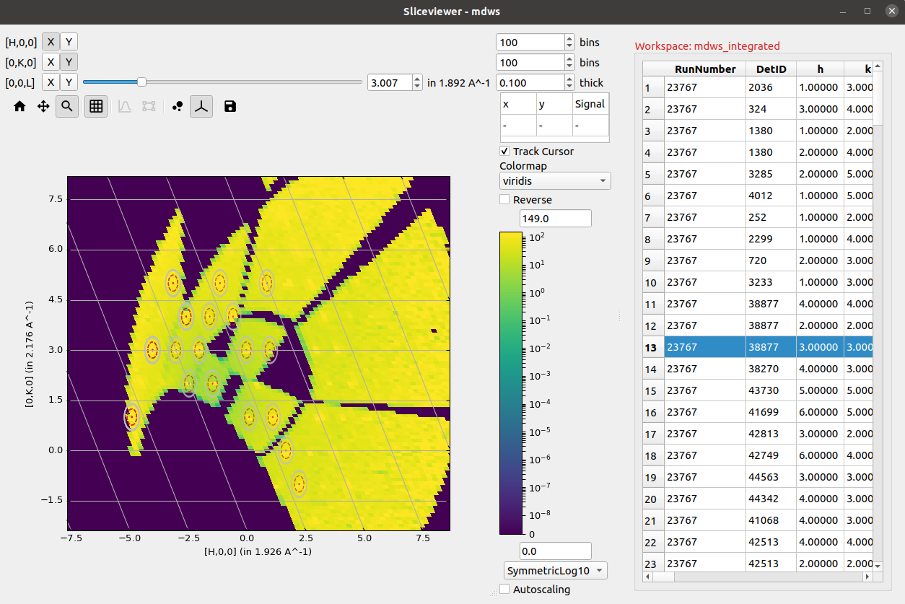
ROI Preview & Extraction#
In addition to the single-pixel line plots that were present in the previous release, a new tool to allow selection of a rectangular region of interest has been added:
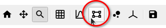
Selecting this tool enables the line plots attached to the image axes but instead of the line plots being the sum over a single pixel in the orthogonal direction the sum is now limited to the selected region:
{kind=link}
A new status bar has been added at the bottom to indicate that the cuts can be extracted to separate workspaces by using the relevant keys. Similar keys and status information is presented in the single-pixel line plots mode.
Non-axis aligned cutting tool#
The cut viewer tool allows the user to interactively make arbitrary 1D cuts to 2D slices of MD workspaces with 3 Q-dimensions. The cut viewer tool consists of a pane on the right with a table and the 1D plot of the chosen cut. The table stores the vectors defining the cut (u1 and u2 in the plane of the slice and u3 out of plane), start, stop, nbins and step size. A representation of the cut is plotted on the slice with end points and centre that can be dragged and an adjustable thickness, which will automatically update the values in the table.
{kind=link}
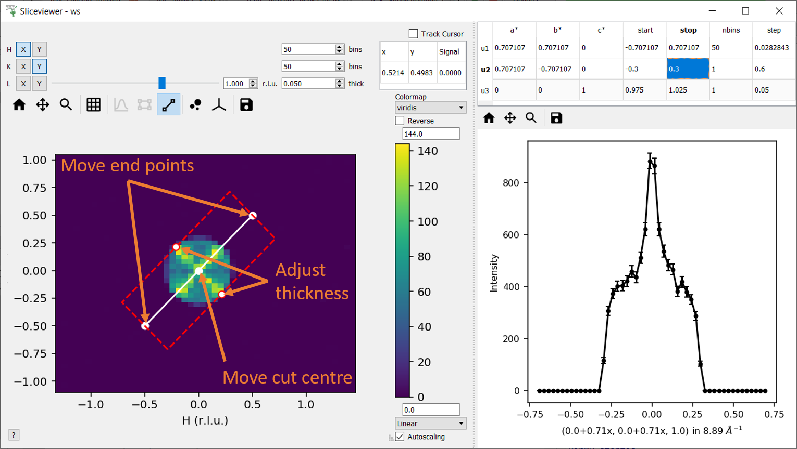
Note at present this tool cannot be used for workspaces that contain non-Q dimensions.
Cursor Information Widget#
The revamped Sliceviewer has merged several features from the SpectrumViewer in MantidPlot. One of these new features is the ability to show information regarding a given pixel as the mouse cursor moves of the image. The new table shows the following quantities for a MatrixWorkspace:
Signal
Spectrum Number
Detector ID
Two Theta
Azimuthal angle
Time-of-flight
Wavelength
Energy
dSpacing
|Q|
{kind=link}
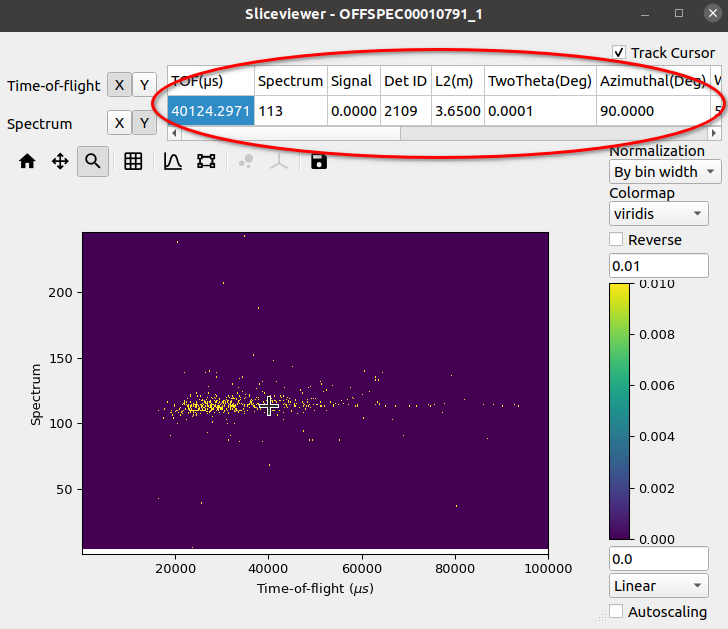
and for an MDWorkspace:
Signal
x
y
H, K, L (if workspace has HKL coordinates)
{kind=link}
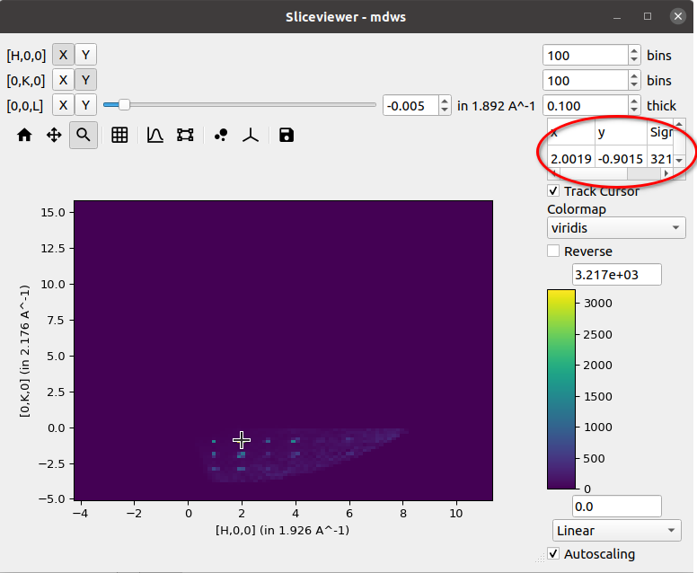
Underneath the cursor there is a checkbox labelled Track Cursor.
When checked, the information in the table is updated as the cursor moves
around the image. If unchecked, the information within the table is updated
only when the left-mouse button is clicked within the image.
Colorbar Autoscaling#
Autoscaling options allow the colorbar limits to automatically be updated. There are several options to help “quickly” re-scale the limits. Some of the options are based on several statistical methods for determining outliers.
Option |
Lower-Limit |
Upper-Limit |
|---|---|---|
Min/Max |
|
|
3-Sigma |
|
|
1.5-Interquartile Range |
|
|
1.5-Median Absolute Deviation |
|
|
{kind=link}
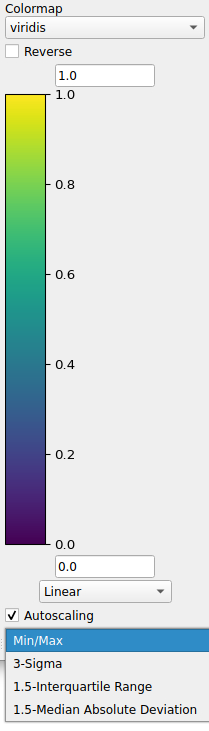
- The abbreviations are listed as follows:
min = minimum
max = maximum
ave = average (or mean)
std = standard deviation
Q1 = 1st quartile (or 25th-percentile)
Q3 = 3rd quartile (or 75th-percentile)
IQR = interquartile range
med = median (or 2nd quartile or 50th-percentile)
mad = median absolute deviation